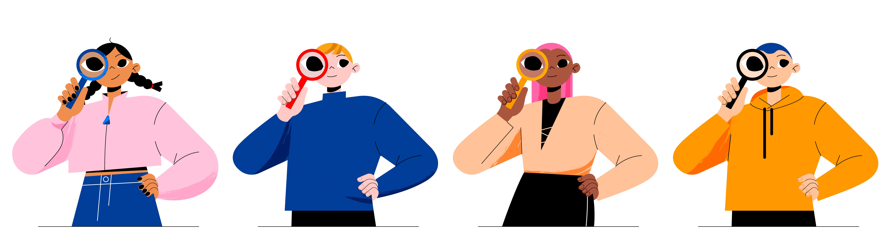

Encuentra la actividad de la semana
Después de revisar los avisos y el calendario, sabes que tienes una actividad que debes realizar esta semana.
Ahora necesitas localizarla dentro del aula virtual.
En la pantalla ves diferentes secciones: contenidos del curso, mensajes, perfil personal y otras herramientas.
Tu objetivo es encontrar dónde está la actividad para poder empezar.

Buscar una actividad
¿Dónde buscarías la actividad?
Estás aprendiendo a moverte por el aula virtual. Lee cada situación y elige la opción más adecuada. Esta actividad te ayudará a reconocer dónde buscar tareas, avisos, contenidos y ayuda dentro del curso.
Progreso Pregunta 1 de 5 · 0 completadas
Resultado 0 respuestas correctas
Pregunta 1 Localizar actividad
Entras al aula virtual y el profesorado ha indicado que esta semana hay que realizar una actividad. Necesitas encontrar dónde está ubicada.
¿Dónde es más probable que encuentres la actividad que debes realizar?
Elige una respuesta para recibir feedback.
Pregunta 2 Revisar instrucciones
Has encontrado la actividad, pero antes de empezar necesitas saber qué hay que hacer, cuándo se entrega y en qué formato.
¿Qué deberías revisar primero dentro de la actividad?
Elige una respuesta para recibir feedback.
Pregunta 3 Avisos importantes
Al entrar en el aula virtual ves que hay un aviso nuevo del profesorado. Puede contener cambios o recordatorios sobre las actividades de la semana.
¿Qué acción sería más adecuada?
Elige una respuesta para recibir feedback.
Pregunta 4 Materiales del curso
La actividad pide responder unas preguntas sobre un contenido del tema. No recuerdas bien la explicación y necesitas consultar el material antes de contestar.
¿Dónde sería más lógico buscar la información necesaria?
Elige una respuesta para recibir feedback.
Pregunta 5 Pedir ayuda
Has revisado la actividad y los contenidos, pero sigues teniendo una duda. Necesitas pedir ayuda de forma adecuada dentro del aula virtual.
¿Cuál sería la mejor opción?
Elige una respuesta para recibir feedback.
Actividad completada
Siguiente paso
Has localizado correctamente la actividad y sabes que es importante leer las instrucciones antes de empezar.
Este paso es fundamental para evitar errores y comprender lo que se espera de ti.
En la siguiente escena, revisarás un aviso del profesorado que te ayudará a completar la actividad correctamente.